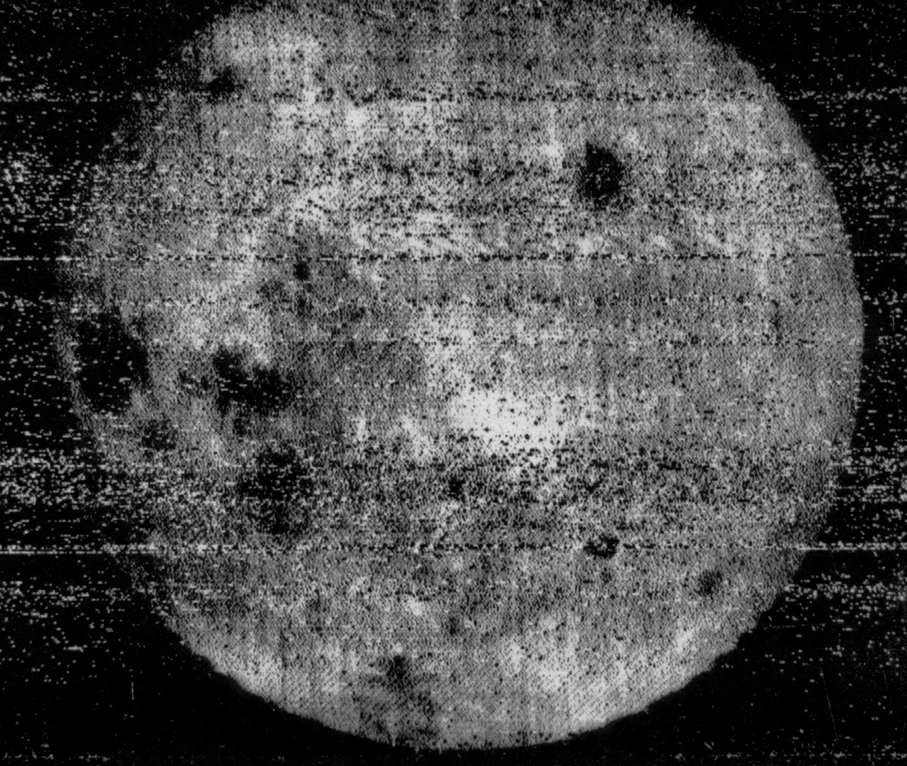

Influential Pictures
1 / 8
Captured by the Luna 3 space craft. Among first views ever of the far side of the moon.
2 / 8
"Buzz" Aldrin walking on the moon.

3 / 8
4 / 8
Soviet cosmonaut Yuri Gagarin was the first man to be in space. In this picture, he is in his capsule, during the flight.

5 / 8
Nebula NGC 2014 and its neighbour NGC 2020 which together form part of a vast star-forming region in the Large Magellanic Cloud, a satellite galaxy of the Milky Way, approximately 163 000 light-years away.
6 / 8
The amazing Hubble Space Telescope, through a deep core sampling technique, captured a view of nearly 10,000 galaxies.
7 / 8
The original "Blue Marble" was taken on Dec. 7, 1972, by the crew of the Apollo 17 spacecraft.

8 / 8
Shot by astronaut William Anders during the Apollo 8 mission